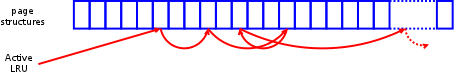
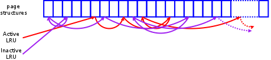
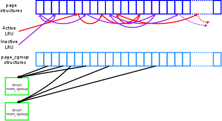
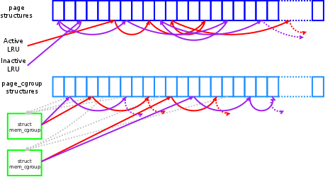

Integrating memory control groups
One of the complaints about control groups is that they have been "bolted on" to existing kernel mechanisms rather than properly integrated into those mechanisms. Given the relatively late arrival of control groups, that is, perhaps, not a surprising outcome. When attaching a significant new feature to long-established core kernel code, it is natural to try to keep to the side and minimize the intrusion on the existing code. But bolting code onto the side is not always the way toward an optimal solution which can be maintained over the long term. Some recent work with the memory controller highlights this problem - and points toward an improvement of the situation.
The system memory map consists of one struct page for each physical page in the system; it can be thought of as an extensive array of structures matching the array of pages:
The kernel maintains a global least-recently-used (LRU) list to track active pages. Newly-activated pages are placed at the end of the list; when it is time to reclaim pages, the pages at the head of the list will be examined first. The structure looks something like this:

Much of the tricky code in the memory management subsystem has to do with how pages are placed in - and moved within - this list. Of course, the situation is a little more complicated than that. The kernel actually maintains two LRU lists; the second one holds "inactive" pages which have been unmapped, but which still exist in the system:

The kernel will move pages from the active to the inactive list if it thinks they may not be needed in the near future. Pages in the inactive LRU can be moved quickly back to the active list if some process tries to access them. The inactive list can be thought of as a sort of probationary area for pages that the system is considering reclaiming soon.
Of course, the situation is still more complicated than that. Current kernels actually maintain five LRU lists. There are separate active and inactive lists for anonymous pages - reclaim policy for those pages is different, and, if the system is running without swap, they may not be reclaimable at all. There is also a list for pages which are known not to be reclaimable - pages which have been locked into memory, for example. Oh, and it's only fair to say that one set of those lists exists for each memory zone. Despite the proliferation of lists, this set, as a whole, is called the "global LRU."
Creating a diagram with all these lists would overtax your editor's rather inadequate drawing skills, though, so envisioning that structure is left as an exercise for the reader.
The memory controller adds another level of complexity as the result of its need to be able to reclaim pages belonging to specific control groups. The controller needs to track more information for each page, including a simple pointer associating each page with the memory control group it is charged to. Adding that information to struct page was not really an option; that structure is already packed tightly and there is little interest in making it larger. So the memory controller adds a new page_cgroup structure for each page; it has, in essence, created a new, shadow memory map:

When memory control groups are active, there is another complete set of LRU lists maintained for each group. The list_head structures needed to maintain these lists are kept in the page_cgroup structure. What results is a messy structure along these lines:

(Once again, the situation is rather more complicated than has been shown here; among other things, there is a series of intervening structures between struct mem_cgroup and the LRU lists.)
There are a number of disadvantages to this sort of arrangement. Global reclaim uses the global LRU as always, so it operates in complete ignorance of control groups. It will reclaim pages regardless of whether those pages belong to groups which are over their limits or not. Per-control-group reclaim, instead, can only work with one group at a time; as a result, it tends to hammer certain groups while leaving others untouched. The multiple LRU lists are not just complex, they are also expensive. A list_head structure is 16 bytes on a 64-bit system. If that system has 4GB of memory, it has 1,000,000 pages, so 16 million bytes are dedicated just to the infrastructure for the per-group LRU lists.
This is the kind of situation that kernel developers are referring to when they say that control groups have been "bolted onto" the rest of the kernel. This structure was an effective way to learn about the memory controller problem space and demonstrate a solution, but there is clearly room for improvement here.
The memcg naturalization patches from Johannes Weiner represent an attempt to create that improvement by better integrating the memory controller with the rest of the virtual memory subsystem. At the core of this work is the elimination of the duplicated LRU lists. In particular, with this patch set, the global LRU no longer exists - all pages exist on exactly one per-group LRU list. Pages which have not been charged to a specific control group go onto the LRU list for the "root" group at the top of the hierarchy. In essence, per-group reclaim takes over the older global reclaim code; even a system with control groups disabled is treated like a system with exactly one control group containing all running processes.
Algorithms for memory reclaim necessarily change in this environment. The core algorithm now performs a depth-first traversal through the control group hierarchy, trying to reclaim some pages from each. There is no global aging of pages; each group has its oldest pages considered for reclaim regardless of what's happening in the other groups. Each group's hard and soft limits are considered, of course, when setting reclaim targets. The end result is that global reclaim naturally spreads the pain across all control groups, implementing each group's policy in the process. The implementation of control group soft limits has been integrated with this mechanism, so now soft limit enforcement is spread more fairly across all control groups in the system.
Johannes's patch improves the situation while shrinking the code by over
400 lines; it also gets rid of the memory cost of the duplicated LRU lists.
On the down side, it makes some fundamental changes to the kernel's memory
reclaim algorithms and heuristics; such changes can cause surprising
regressions on specific workloads and, thus, tend to need a lot of scrutiny
and testing. Absent any such surprises, this early-stage patch set looks
like a promising step toward the goal of turning control groups into a
proper kernel feature.
| Index entries for this article | |
|---|---|
| Kernel | Control groups/Memory controller |
| Kernel | Memory management/Control groups |